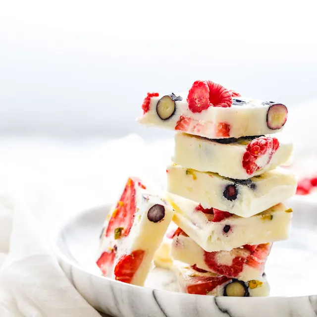

Reach for these instead of candy to appease your kid's sweet tooth while keeping them healthy. Win win!
Stay cool & healthy with the easy to make & tasty treats for the summertime. Really anytime you're craving berries.